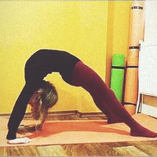

Акробатика
Акробатика для дітей - це не тільки зачаровуюче своєю красою видовище, а й всебічний розвиток дитини. Заняття з акробатики допомагають дітям краще відчувати своє тіло, координуватися в просторі, дарує бажану гнучкість і рухливість. Цей вид спорту теж має велику перевагу - акробатика робить малюка впевненим у власних силах і підвищує авторитет у однолітків.
Маленький акробат вміє виконувати такі трюки, які приводять у захват більшість хлопців та дівчат, тому дитина вигідно відзначиться в будь-якій компанії. Акробатика розкриває характер навіть тихих хлопців та дівчат, роблячи їх цікавими й унікальними для оточуючих.
Заняття відбуваються двічі на тиждень тривалістю 60 хвилин. У нас діє дві групи:
- Молодша група – від 4 до 7 років;
- Середня група – від 8 -12 років.